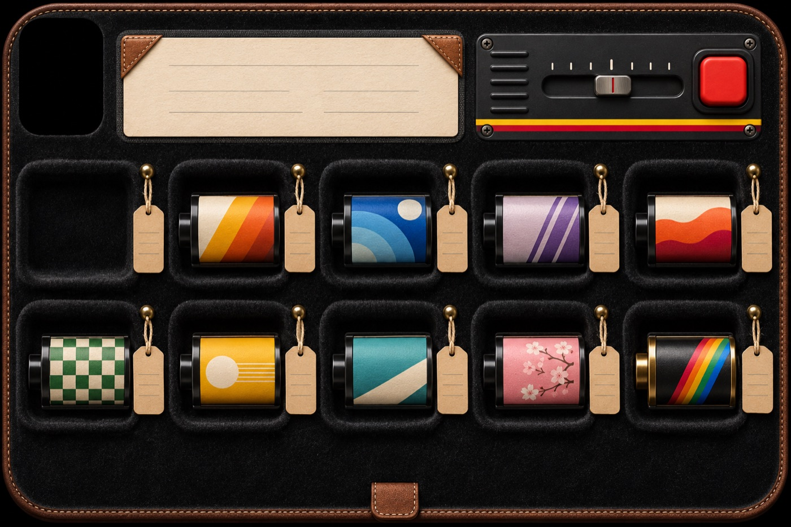
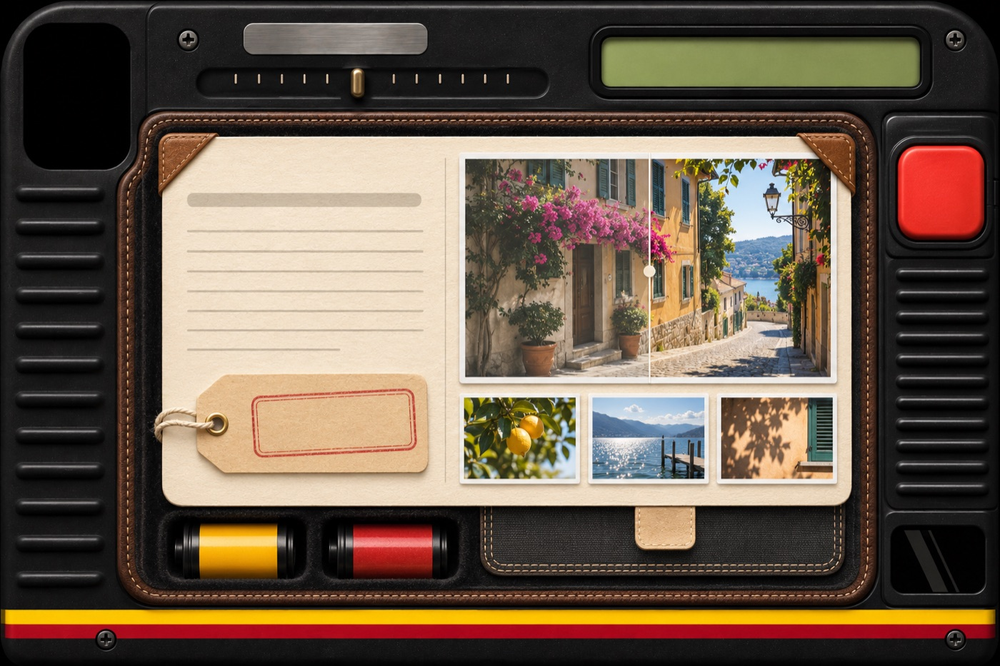
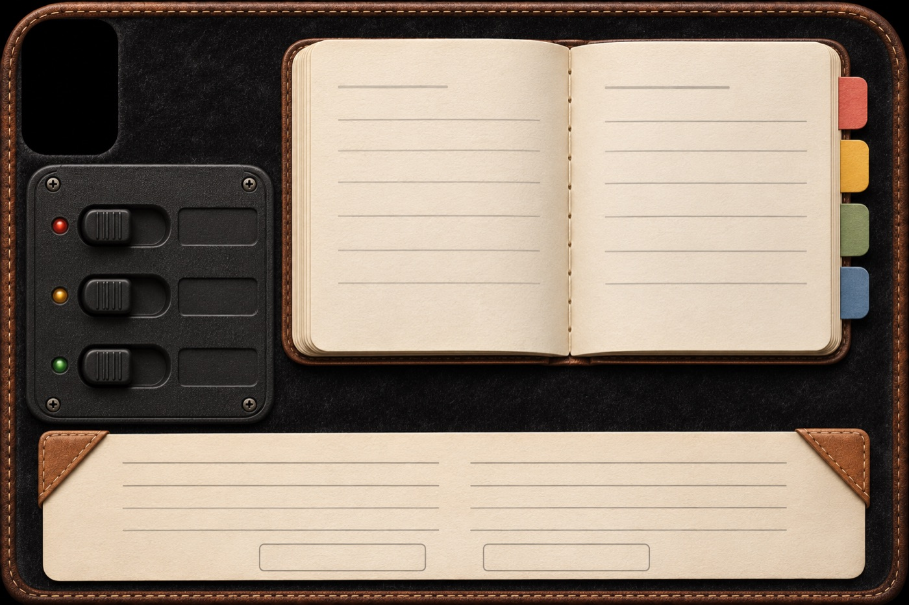

<title>Koco 外屏老页面方案</title>
<meta name="claude:viewport-fit-sides" content="cover">
<style>
:root{--bg:#f3efe6;--fg:#201c17;--muted:#6f675c;--line:#ddd5c6;--card:#fbf8f2;--accent:#b23b1e}
@media (prefers-color-scheme:dark){:root:not([data-theme="light"]){--bg:#15130f;--fg:#ede7db;--muted:#9b9284;--line:#332e27;--card:#1e1b17;--accent:#ec7b52;color-scheme:dark}}
:root[data-theme="dark"]{--bg:#15130f;--fg:#ede7db;--muted:#9b9284;--line:#332e27;--card:#1e1b17;--accent:#ec7b52;color-scheme:dark}
body{background:var(--bg);color:var(--fg);font:16px/1.65 -apple-system,"PingFang SC",system-ui,sans-serif;padding-left:max(16px,env(safe-area-inset-left,0px));padding-right:max(16px,env(safe-area-inset-right,0px));padding-block:22px 48px}
main{max-width:860px;margin:0 auto}
h1{font-size:22px;margin:0 0 4px}
.sub{color:var(--muted);font-size:14px;margin:0 0 20px}
figure{margin:0 0 26px}
img{width:100%;height:auto;border-radius:12px;display:block;border:1px solid var(--line)}
figcaption{font-size:14px;color:var(--muted);margin-top:8px}
figcaption b{color:var(--fg);font-size:16px;display:block;margin-bottom:2px}
.k{font:600 11px/1 ui-monospace,Menlo,monospace;letter-spacing:.08em;color:var(--accent)}
</style>
<main>
<h1>外屏老页面方案</h1>
<p class="sub">合上时和普通 iPhone 上的商店、详情、设置。都是 GPT 出的概念图，看整体语言：上面的字、罐子花纹都是占位，正式版用我们自己的九个罐子和真实文字。选择请到决定页点。</p>
<figure><figcaption><span class="k">图 1 · 商店</span><b>相机包的胶卷抽屉</b>两排绒布槽，每卷挂价签；相机里那卷的槽空着；第十格是全部胶卷。点卷 = 看它，点价签 = 试拍、购买或选作下一卷。（图里上方的纸卡和小机身是 GPT 自己加的，正式版去掉，抽屉铺满。）</figcaption></figure>
<figure><figcaption><span class="k">图 2 · 详情</span><b>点一卷，抽出说明卡</b>卡片左边写名字、介绍和价签；右边一张大样张可以左右拖动对比（原图 / 胶片），下面三张小样张点了换大图；“用我的照片试试”也在这里，能存下来。GPT 这版把卡放进了机身的大窗里，机身还看得到；另一种是卡直接盖在抽屉上。底部拉签返回。</figcaption></figure>
<figure><figcaption><span class="k">图 3 · 设置</span><b>包里的维护夹</b>左边三个实体拨钮：同时存原图、快门声、触感，指示灯亮表示开。右边说明册，彩色页签：使用技巧、权限、隐私、开源许可；长文点开后整张纸铺满屏幕，大字可滚动。下面的凭证写已拥有几卷，“恢复购买”“兑换码”印在下沿。</figcaption></figure>
</main>
